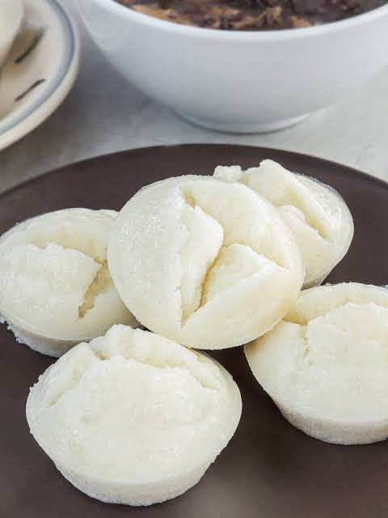

Home
Filipino Puto (Rice Cake)

Puto is a popular Filipino bite-sized steamed rice cake. It is traditionally made from fermented rice dough called galapong, though modern recipes often use rice flour, sugar, coconut milk, and baking powder.
Texture: Soft, fluffy, and slightly spongy.
Flavor: Mildly sweet, often balanced by salty cheese or butter toppings.
Variations: Includes flavors like ube (purple yam) or pandan, and regional styles like Calasiao puto.
Ingredients
- Rice flour (or all-purpose flour): 2 cups
- Granulated sugar: 1 cup
- Baking powder: 1 tablespoon
- Salt: ¼ teaspoon
- Water (or evaporated milk for richer flavor): 1 ½ cups
- Melted butter (or cooking oil): ¼ cup
- Large egg: 1 piece
- Cheddar cheese: Sliced into small rectangles for toppings
Step by Step Instructions
-
Set Up the Steamer
- Fill the bottom pan of your steamer with water.
- Bring the water to a rolling boil over medium-high heat.
- Wrap the steamer lid with a clean kitchen towel. This catches condensation and prevents water from dripping onto the cakes, which makes them soggy.
-
Mix the Dry Ingredients
- Place a fine-mesh strainer over a large mixing bowl.
- Add 2 cups of flour, 1 cup of sugar, 1 tablespoon of baking powder, and ¼ teaspoon of salt.
- Sift the ingredients together into the bowl to break up any lumps and incorporate air.
-
Incorporate the Wet Ingredients
- Pour 1 ½ cups of water (or evaporated milk) into the dry mixture.
- Add ¼ cup of melted butter and 1 beaten egg.
- Whisk the mixture gently just until the batter is smooth and uniform. Do not overmix, or the puto will become dense and chewy.
-
Fill the Molds
- Brush the inside of your silicone or plastic puto molds lightly with oil or melted butter.
- Pour the batter into each mold, filling them only ¾ full to leave room for the cakes to rise.
-
Steam the Batter
- Lower the heat to medium.
- Lower the heat to medium.
- Cover with the towel-wrapped lid and steam for 10 minutes. You can check readiness by inserting a toothpick into the center; it should come out clean.
-
Melt the Cheese Topping
- Quickly remove the lid to avoid losing too much heat.
- Place a small rectangle of cheddar cheese flat on top of each puto.
- Cover immediately and steam for an additional 1 minute until the cheese is melted and gooey.
-
Cool and Unmold
- Take the steamer basket off the heat.
- Let the puto sit in the molds for 3 to 5 minutes until they are cool enough to handle.
- Gently press the sides of the molds to release the cakes, push from the bottom, and serve.